Primera propuesta
Aquí lo principal es la forma básica que tiene, siendo más fácil manejarlo sin perderse, al seleccionar una de las opciones de perfiles de profesores guías en donde mencionan sus títulos, docencia y publicaciones, además aparecerán datos como los alumnos aprobados por cada inscrito.
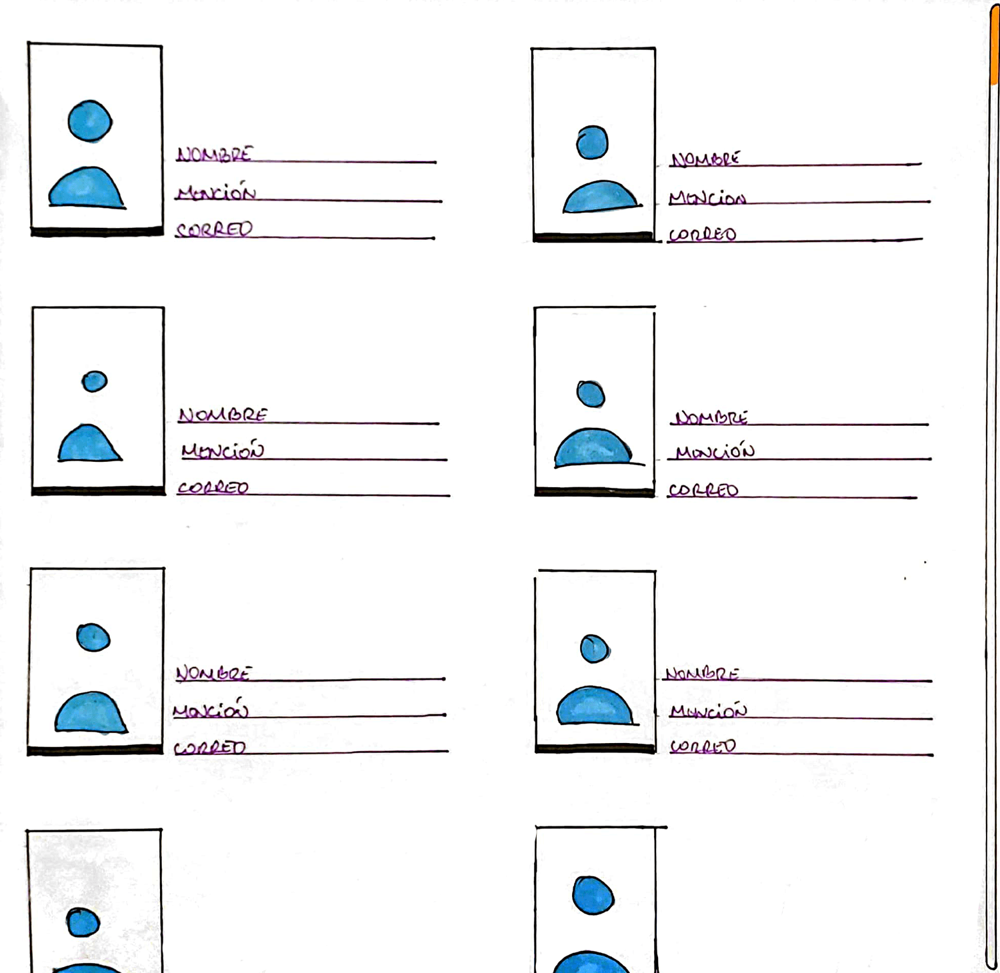
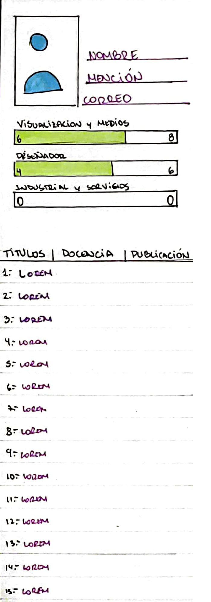
Segunda propuesta
Aquí lo principal es su característica forma de avanzar perfiles, siendo esto horizontal para darle más dinamismo, aquí se mencionan datos básicos del profesor guía como: Nombre, Mención y porcentaje de aprobación. En su forma móvil, se desplegarán más datos de utilidad para una investigación más completa de la línea de investigación que proporciona cada profesor, se podrá ver su perfil académico, información personal, docencia y sus publicaciones
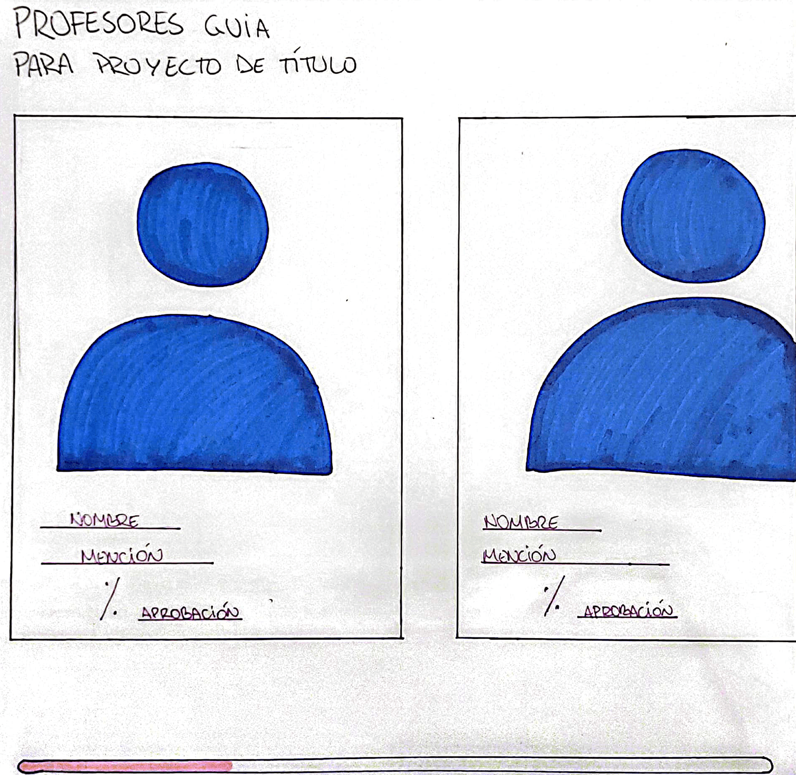
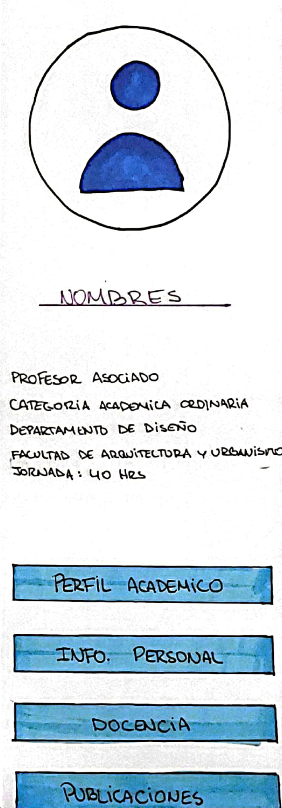
Tercera propuesta
Aquí lo principal es el histograma que se muestra en pantalla, aquí se ve la evolución anual de las notas de los estudiantes que dieron proyecto de titulo cada profesor, en la forma móvil se muestra un diseño más minimalista donde la búsqueda será más fácil dividiéndola en nombre y mención.
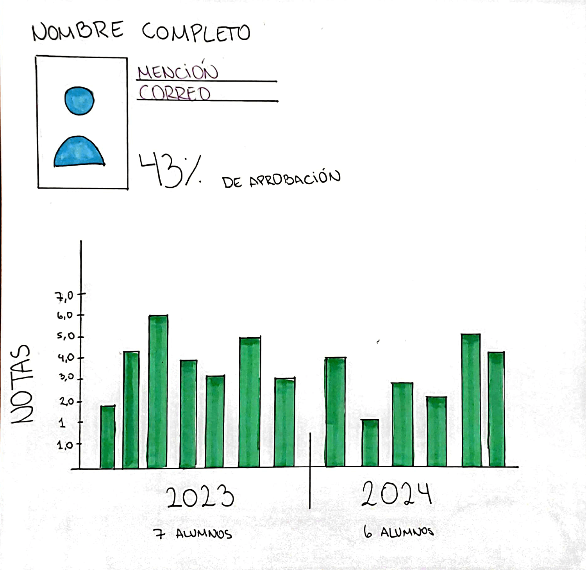
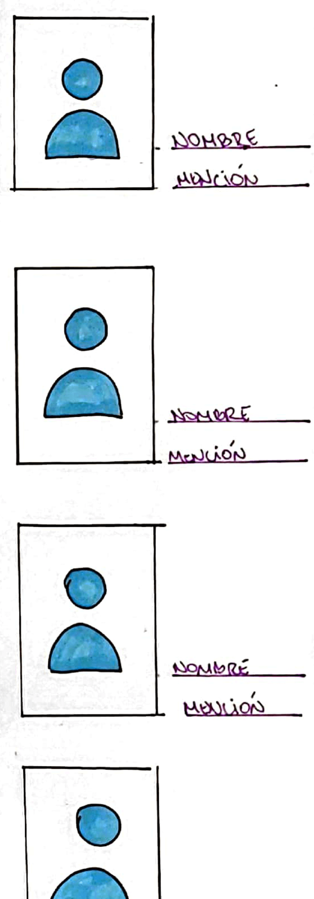
Cuarta propuesta
Aquí lo principal es diseño, destacando el gráfico circular que aparece en medio de la pantalla en donde aparecerán todos los profesores con su respectivo porcentaje de aprobación, además de eso, existe un apartado en donde mención al top 3 de mejores porcentajes de aprobación de cada mención. En el formato móvil, también destacan los gráficos circulares, pero esta vez cada mención tendrá su propio gráfico junto a un panel donde aparece cada profesor junto a su respectivo porcentaje de aprobación.
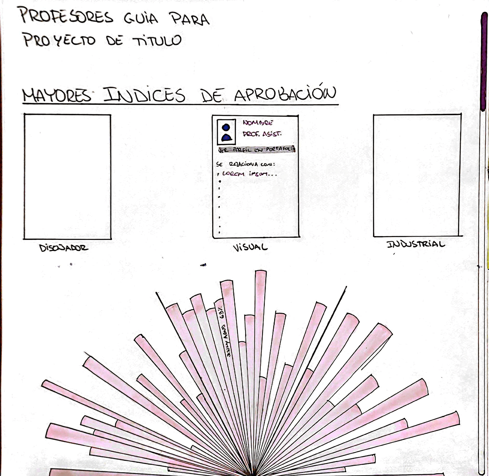
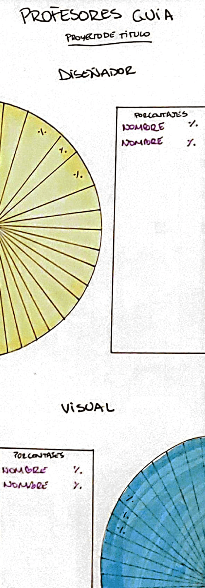
Quinta propuesta
Aquí lo principal es la variedad de visualizaciones que posee, la primera menciona a la cantidad de aprobados totales de 2023 en adelante de cada mención, el verde con los valores 9, 19 y 11 son los que aprobaron con el nombre de diseñador, con mención visual e industrial y los datos naranjos aprobaron bajo el título de diseñadoras, con mención visual o industrial. Siguiendo con la parte inferior, aparecen 3 tipos de visualización de datos, de trata, de barras y uno estilo circular pero con un pedazo de tarta vertical, cada uno simboliza los diseñadorxs, visuales e industriales. En el formato móvil, aparecen los datos del profesor que haya elegido como nombre, porcentaje de aprobación, la mediana, máxima y mínima de notas de proyecto de título, además de una pequeña descripción acerca de su especialización.
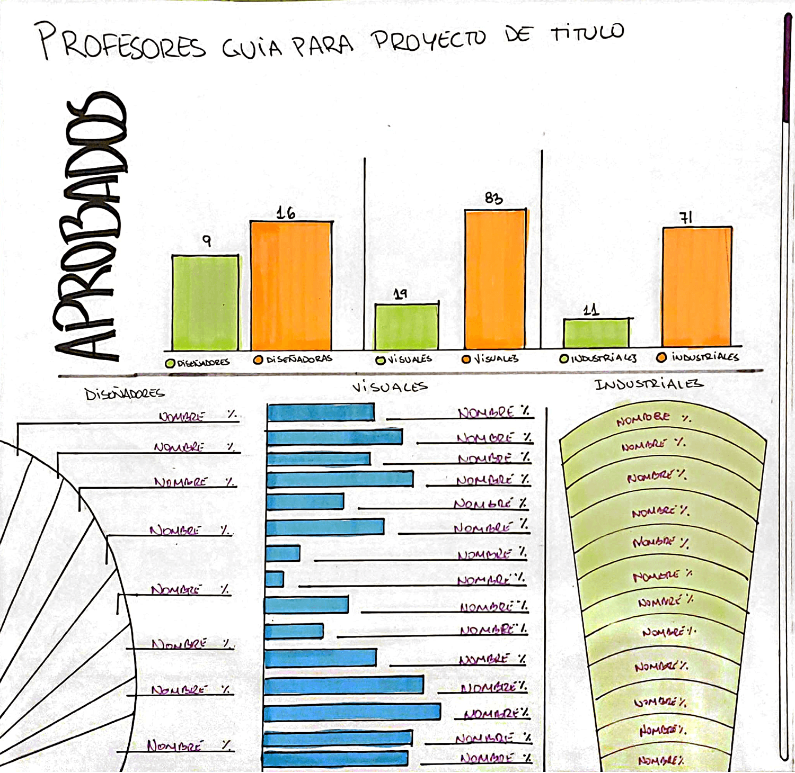
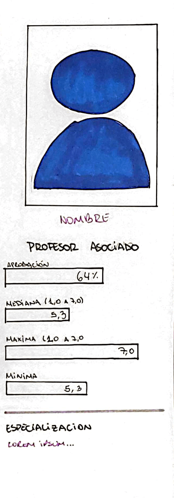
Sexta propuesta
Aquí lo principal es la eficiencia del orden que tiene esta visualización, usando gráficos de barra y de dona para mostrar los datos, lo verde representan a los aprobados por inscritos y abajo aparecen los porcentajes de aprobación que tiene cada profesor, además de especificar su nombre y mención. En el móvil, aparece una forma más acotada de los datos, pero siendo los mismos que en el formato web.
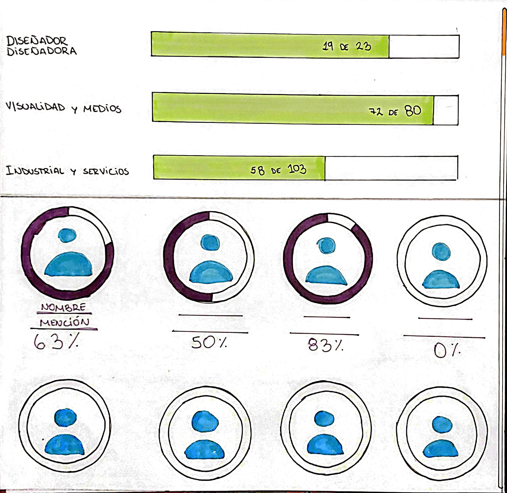
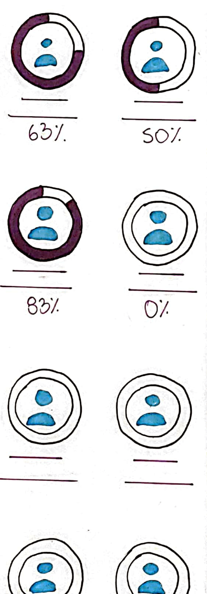